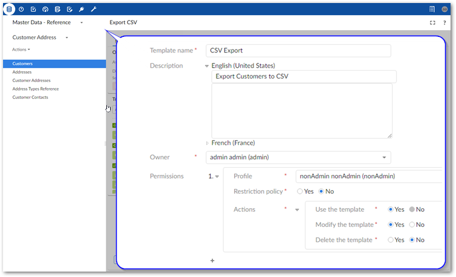
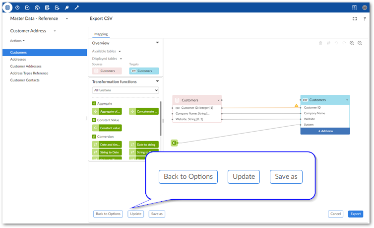

The add-on allows you to store configuration settings in templates. Each template holds an import, export or data transfer operation's option settings and mapping details.
The option to save a template is available after entering the Mapping screen. At this point, you already entered source/target information and specified any format specific options to apply. The add-on auto-generated mappings where possible. You can save a template with the current configuration, or update mappings and add transformations before saving. As shown below, to create a template, you specify a unique name, optional description, owner, and template permissions:

During an import, export, or data transfer operation you can select an existing template using the Load template field on the Options page. After choosing a template, the add-on automatically populates the option fields and mappings. You can:
Change configuration options.
View and update mappings.
Initiate the import, export, or transfer operation.
If you have sufficient permission when viewing a template, you can select Update to change template settings. Additionally, you can create a copy of the current template by selecting Save as. After making changes, you have the option of removing the original template via the Delete current template option.

Some changes to configuration settings impact the mappings stored in a template. If you make changes to settings that impact mappings, a warning displays to inform you of the impact. Additionally, if you continue with the data transfer operation, a message prompt allows you to save or discard changes to the template.